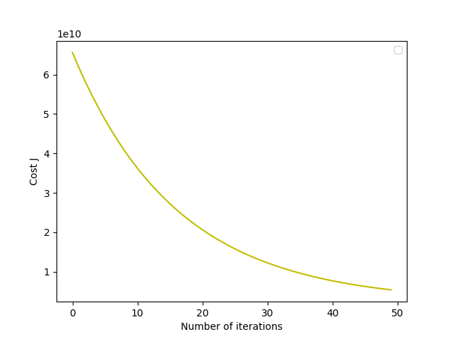

Linear regression with one variable
Plotting the Data
Read the Data
使用pandas库中的read_csv将数据读入。1
2
3
4import pandas as pd
data = pd.read_csv('./ex1data1.txt',
names=['Population','Profit'])
Plotting the Scatter Plot
1 | import matplotlib.pyplot as plt |
散点图如下所示：
Gradient Descent
Update Equations
The objective of linear regression is to minimize the cost function
$J(\theta)=\frac{1}{2m}\displaystyle\sum^{m}_{i=1}(h_\theta(x^{(i)})-y^{(i)})^2$
where the hypothesis $h_\theta(x)$ is given by the linear model
$h_\theta(x)=\theta^Tx=\theta_0+\theta_1x_1$
Recall that the parameters of your model are the $\theta_j$ values. These are the values you will adjust to minimize cost $J(\theta)$. One way to do this is to use the batch gradient descent algorithm. In batch gradient descent, each iteration performs the update
$\theta_j:=\theta_j-\alpha\frac{1}{m}\displaystyle\sum_{i=1}^{m}(h_\theta(x^{(i)})-y^{(i)})x^{(i)}_j$
With each step of gradient descent, your parameters $\theta_j$ come closer to the optimal values that will achieve the lowest cost $J(\theta)$.
Implementation
初始参数为0向量，学习率(learning rate)$\alpha$为0.01，迭代次数为15001
2
3
4
5import numpy as np
theta = np.zeros((2,))
iterations = 1500
alpha = 0.01
Computing the cost $J(\theta)$
关于代价函数（cost function），在回归任务中均方误差是是最常用的性能度量，我们试图让均方误差最小化。而基于均方误差最小化来进行模型求解的方法为“最小二乘法”（least square method）。在线性回归中，最小二乘法就是试图找到一条直线，是所有样本到直线上的欧式距离之和最小。1
2
3
4def computeCost(theta, X, y):
h = np.dot(X, theta)
# np.sum为向量相加
return np.sum(np.power(h-y,2)) / (2 * len(y))
Gradient descent
假设$\alpha=0.01,iterations=1500,$1
2
3
4
5
6
7
8
9
10
11
12
13
14
15def gradientDescent(X, y, theta, alpha, num_iters):
for iters in range(num_iters):
h = np.dot(X, theta)
theta -= alpha * np.dot(X.T, (h - y)) / len(y)
theta = np.zeros((2,))
iterations = 1500
alpha = 0.01
y = np.array(data.iloc[:,1])
X = np.array(data.iloc[:,0])
X = np.c_[np.ones((len(y), 1)), X]
# gradientDescent
gradientDescent(X, y, theta, alpha, iterations)
Plotting the linear fit
1 | def plotLinearPlot(theta): |
拟合结果如下：
Visualizing $J(\theta)$

Linear regression with multiple variables
Feature Normalization
因为两个特征的数值相差近1000倍，故我们需要对其进行特征缩放（feature scaling），来加快梯度下降的收敛速度。
对于每一个特征值，我们采用:
$\frac{x^{(i)}-mean}{std}$, $std$为标准差（standard deviations），
来特征缩放。1
2
3
4
5
6def featureNormalize(X):
mean = np.ones((len(X), 2)) * np.array([np.mean(X[:, 0]),
np.mean(X[:, 1])])
std = np.ones((len(X), 2)) * np.array([np.std(X[:, 0]),
np.std(X[:, 1])])
return (X - mean) / std
Gradient Descent
1 | import numpy as np |
Selecting learning rates
当$\alpha$=0.3时，cost随迭代次数的变化曲线为：
当$\alpha$=0.1时，cost随迭代次数的变化曲线为：
当$\alpha$=0.03时，cost随迭代次数的变化曲线为：

当$\alpha$=0.01时，cost随迭代次数的变化曲线为：
由以上可以得出，$\alpha=0.1$是一个较为合适的学习率。